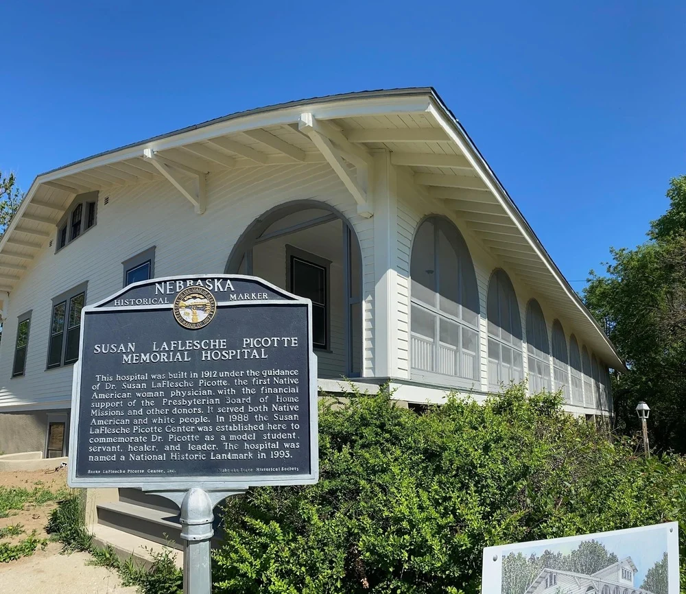

a Tipi
She came into the world in 1865, in a buffalo-hide tipi on the Nebraska plains, daughter of the last great chief of the Omaha.
Susan La Flesche was born on June 17, 1865, on the Omaha Reservation in eastern Nebraska. Her father was Chief Joseph La Flesche — known as Iron Eye — the last formally recognized chief of the Omaha Tribe, a man of Ponca and French Canadian descent who had watched what the encroachment of white civilization had done to his people and made a fateful decision. His children would learn both worlds. They would carry the Omaha in their hearts and the tools of survival in their hands.
It was a household that produced extraordinary people. Her sister Susette — Bright Eyes — became a nationally known activist who served as interpreter for Ponca Chief Standing Bear during his landmark 1879 civil rights trial in Omaha, one of the first times a federal court ruled that a Native American was a person under the law. Her half-brother Francis became a celebrated ethnologist and musicologist at the Smithsonian. And Susan, the youngest daughter, watched from childhood as the world around her shaped itself into a mission.
When Susan was eight years old, she sat through the night beside a dying old Omaha woman. She watched as a white doctor was summoned — once, twice, three times, four — and did not come. The old woman died. Susan La Flesche concluded, at eight years old, that the doctor had not come because the woman was just an Indian. She made a vow. She would become the doctor herself.
1889
She fought through two walls at once — one built against women, one built against Native Americans — and finished first.
The road to medical school was not straight. Susan La Flesche attended mission schools on the reservation, then the Elizabeth Institute in New Jersey, then the Hampton Normal and Agricultural Institute in Virginia — a school founded for freed Black students that also accepted Native Americans. She finished near the top of her class. A family friend, anthropologist Alice Fletcher, helped her secure a scholarship loan to the Woman’s Medical College of Pennsylvania in Philadelphia — one of the only medical schools in the world that would accept women.
She arrived in Philadelphia in 1886. She was twenty-one years old, a young Omaha woman from the Nebraska plains, in one of America’s great cities, studying medicine at a time when the idea of a Native American woman becoming a physician was, to most of the country, simply not a category that existed.
She thrived anyway. She overcame the stigma of being a woman in higher education. She overcame the racism directed at her heritage. In the lecture halls of Philadelphia, she became the student they all talked about. On March 14, 1889, Susan La Flesche stood at the front of her graduating class and received her medical degree — valedictorian, the top of her class, the first Native American in the history of the United States to earn a medical degree.
She finished first in her medical school class. She did this in 1889 — 31 years before women could vote and 35 years before Indians were recognized as American citizens in their own country.
— Omaha World-Herald, profile of Dr. Susan La Flesche PicotteThe East Coast wanted to keep her. There were prestigious opportunities — a life of professional recognition in New York, perhaps Paris. She turned them all down. She packed her medical bag and took the train home to Nebraska. Her people were waiting.
Doctor
Overnight she had 1,244 patients scattered across 1,350 square miles. She made house calls by foot, then horse, through blizzards and heat.
She returned to the Omaha Reservation in 1889 as physician at the government boarding school. Her patients came immediately. They were sick with tuberculosis, cholera, measles, influenza — desperately ill people scattered miles apart across rolling Nebraska countryside, most of them poor, most of them with no other options. Her white counterpart on the reservation, faced with the reality that every tribal member insisted on Dr. Susan, simply quit. She became the only doctor for a territory the size of a small state.
She made house calls on foot in the beginning. Then on horseback. Then by buggy. She traveled through subzero Nebraska winters, through white-out blizzards, arriving at sod houses and wooden cabins to find feverish children, dying elders, women in difficult labor. She brought her own children on house calls when she had to. She carried her medical bag and her Omaha language and her knowledge of both worlds, and she used all of it.
But she did more than medicine. Her patients came to her for everything. She helped tribal members navigate the bureaucracy of the Office of Indian Affairs, write letters, translate official documents, fight the land fraud that was stripping the Omaha of their allotments. She organized public health campaigns — fighting tuberculosis, discouraging communal drinking cups at village wells, advocating for screen doors on houses to prevent insect-borne disease. She founded a library. She taught Sunday school. She presided over church services. She lobbied the state legislature against liquor sellers operating on reservation land, eventually persuading the Office of Indian Affairs to ban liquor sales in reservation towns.
She became their doctor — but in many ways their lawyer, accountant, priest, and political liaison. So many of the sick insisted on Dr. Susan that her white counterpart suddenly quit, making her the only physician on a reservation stretching nearly 1,350 square miles.
— Smithsonian Magazine, “The Incredible Legacy of Susan La Flesche”

1913
No government would build a hospital for her people. So she built one herself.
For years, Dr. Susan La Flesche Picotte had written letters to every Commissioner of Indian Affairs she could reach, pleading the same case: her people needed a hospital. They were sick. They were dying in sod houses miles from care. A proper building, with proper equipment, staffed by proper medical personnel, could save lives that were currently being lost for no reason other than poverty and neglect.
Not one Commissioner agreed to fund it.
By the time she accepted that the government was not coming, her own health was failing. A chronic bone infection — almost certainly the early stages of the bone cancer that would eventually kill her — had been wearing her down for years. She had buried her husband Henry, who died of complications from alcoholism in 1905. She had raised two sons. She had served her people for two decades while her own body slowly gave out.
She did not stop. She turned to her East Coast connections — the Quaker donors and Presbyterian women’s groups who had helped fund her education thirty years before. She raised $9,000. In 1913, in Walthill, Nebraska, the Presbyterian Memorial Hospital opened on a hill at the north end of town. Dr. Susan La Flesche Picotte walked three blocks from her house to work there every day.
It was the first privately funded hospital ever built on a Native American reservation. No government money. No federal appropriation. Built by one woman, funded by a community that believed in her, for people the government had decided were not worth the expense.
This is the first hospital that was built on any reservation. This was before women were eligible to vote, and before Native Americans were considered human beings.
— Liz Lovejoy Brown, Executive Director, Dr. Susan La Flesche Picotte Center, Walthill, NebraskaShe died two years later, on September 18, 1915. She was forty-nine years old. The word Omaha means “against the current.” She had been swimming against it her entire life. The hospital she built — now the Dr. Susan La Flesche Picotte Memorial Hospital — was declared a National Historic Landmark in 1993. It was restored by a volunteer organization that raised $6 million from community donors, including Nebraska physicians who gave $600 each in her honor when they finally learned her name.
Belongs Here
She built the first community-funded institution on the reservation. This archive was built the same way — and exists for the same reason.
In 1913, Dr. Susan La Flesche Picotte did something that no government would do for her people. She went around the government entirely. She built her hospital the only way left to her — by rallying the community, calling on people of conscience to invest in something that mattered, and opening the doors herself.
The Best of America™ National Archive was built the same way.
In 1913, Dr. Picotte’s hospital opened its doors on the Omaha Reservation — the first institution of its kind on Native American land, built not with government money, but with community support, by people who believed that the men and women of the reservation deserved care regardless of what the government had decided.
In 2026, The Best of America™ Archive honors Dr. Picotte as its first Community Leader honoree — an archive itself built not with government funding, but by Local Patriot Businesses™: community members, local entrepreneurs, and Americans who believe that the heroes of this nation deserve to be remembered regardless of whether Washington has gotten around to it.
Dr. Susan La Flesche Picotte did not wait for permission. Neither does this archive. She is not just an honoree here. She is a founding principle.
She was virtually unknown outside Nebraska for most of the century after her death. The biography that finally told her full story — A Warrior of the People by Joe Starita — was published in 2016. A PBS documentary followed in 2020. A life-size statue was installed in Lincoln, Nebraska in 2021. Her hospital was restored by a volunteer community effort and reopened to serve tribal members again. The word is getting out — 106 years late, but it is getting out.
This archive is part of that work. Her name is here permanently, in the founding record of The Best of America™, because she is exactly who this archive exists to honor: someone who saw what needed to be done, found no one willing to do it, and did it herself — for her community, on her own terms, without waiting for anyone’s permission.
Against the current. Always against the current.